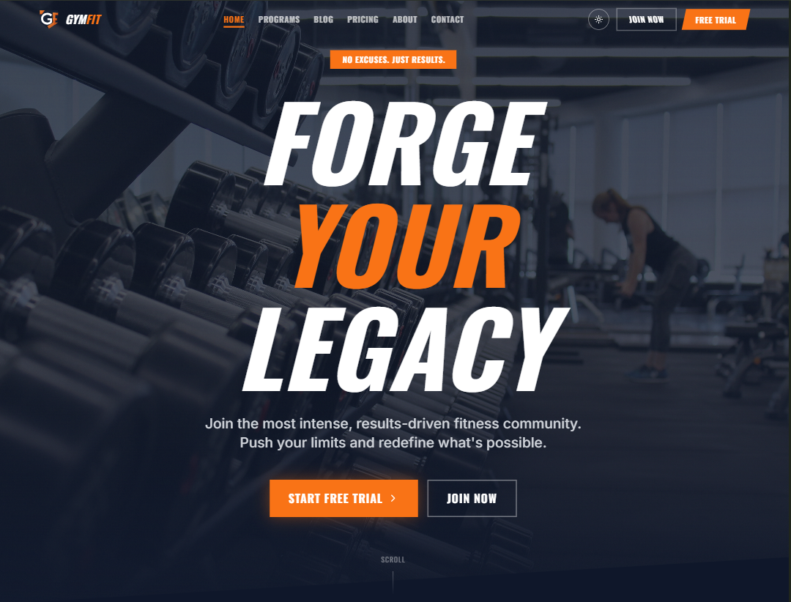
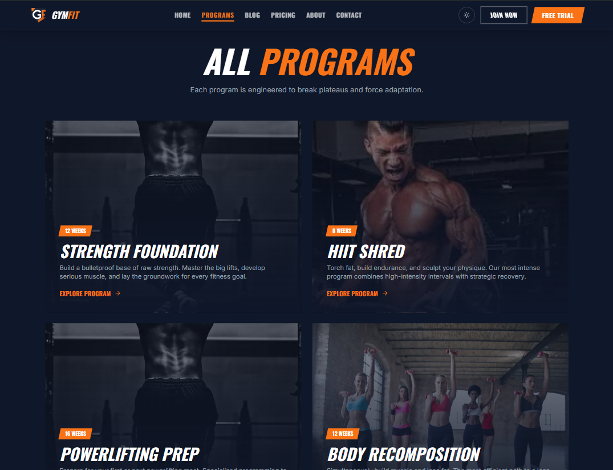
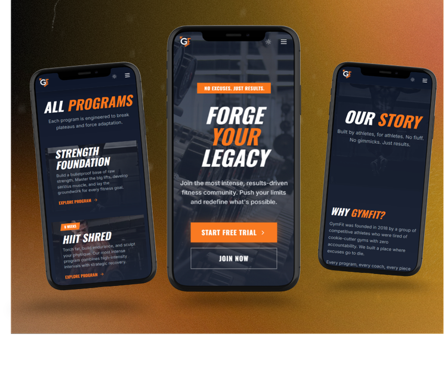

BMI calculator
Enter height and weight and get an instant reading with a category label.
Case study: Gym membership website
A bold, dark-themed gym site with tools members can actually use: a BMI calculator, a class schedule and a membership pricing modal.
A gym site should do more than look good. It should let members check their BMI, browse classes and pick a plan.
The biggest challenge wasn't the visuals. It was building interactive features that fit the brand and were useful.
The BMI calculator had to be accurate and match the dark theme, the schedule had to be scannable, and the membership modal had to guide people to a plan.
Enter height and weight and get an instant reading with a category label.
A weekly schedule with times, trainers and class types, filterable by type.
Pricing tiers presented clearly, with plan comparison.
A toggle built with React state and Tailwind's dark mode utilities.



Deep blacks, high-contrast type and orange accents to match the intensity of a fitness brand.
I mapped the BMI logic, schedule data structure and modal flow before writing code.
React, TypeScript and Vite, with each feature as its own component.
Added dark and light mode, then tested every feature across breakpoints.
Open the deployed project or go back to my other work.